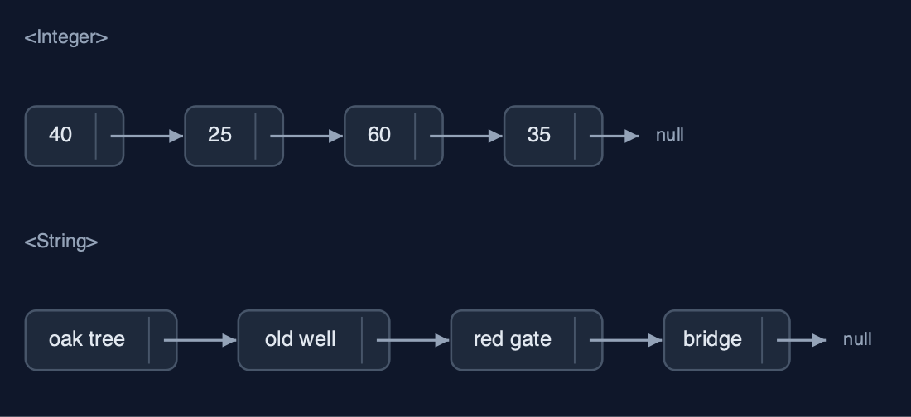
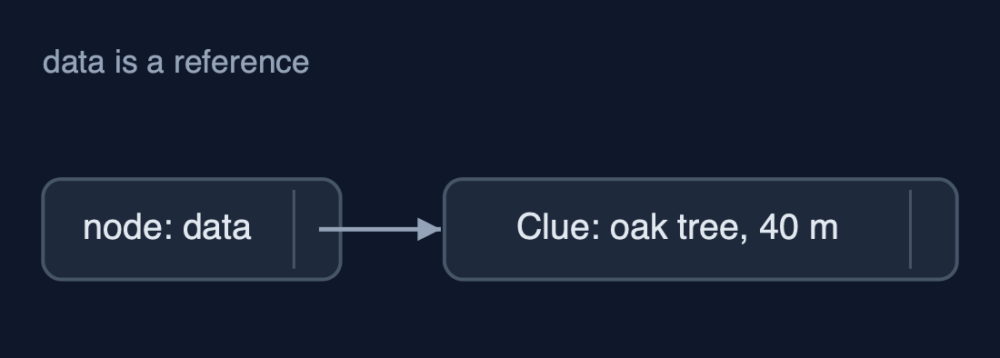
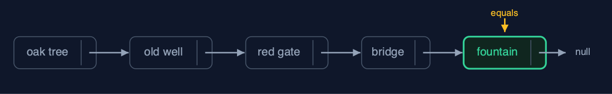
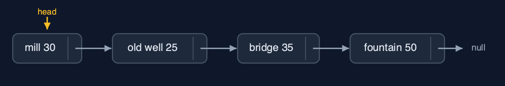
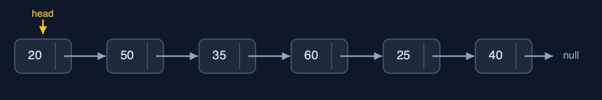

Singly Linked List (Generic), Explained
In one sentence
A generic singly linked list is the singly linked list with a type parameter: each Node<T> refers to a T and to the next node, elements are matched with equals, and every operation keeps its cost.
The picture

GenericSinglyLinkedList<Clue>: each Node<Clue> refers to a Clue and to the next node
The everyday idea
Picture the treasure-hunt trail again, but now each signpost holds a slip that says where the prize for this stop is kept, rather than the prize itself, plus the direction to the next signpost. The trail does not care whether the prizes are coins, books or maps: the signposts work the same for all. To ask whether a stop has "the fountain, 50 metres", you compare what the slip describes, not the slip itself.
The 5 acts
Act 1: One class, any element type
GenericSinglyLinkedList<String> holds the six place names, GenericSinglyLinkedList<Integer> the distances between clues in metres, and GenericSinglyLinkedList<Clue> records of our own, each a place and a distance. All three are built with insertAtBeginning, and displayed by the same loop. The type argument is checked by the compiler: metres.insertAtEnd("far") is refused before the program runs.

Two of the three lists: Integer distances and String places, from the same class Here are two of the lists. Distances, and place names. The same nodes, the same next pointers, different data.
What the demo printed:
<String>: head -> the oak tree -> ... -> the chest -> null
<Integer>: head -> 40 -> 25 -> 60 -> 35 -> 50 -> 20 -> null
<Clue>: head -> the oak tree (40 m) -> ... -> the chest (20 m) -> null
one class, three element types; metres.insertAtEnd("far") does not compileAct 2: Node<T>: data is a reference
Each Node<Clue> holds two references: data, to a Clue object stored elsewhere, and next, to the following node. Counting still means following next pointers from the head: 6 steps for 6 clues. The head's data is the very Clue object that was inserted; the node refers to it and holds no copy. Unlike a generic array, a linked list needs no cast: every node is created as new Node<>(data, null).

A Node<Clue>: data refers to a Clue object; next refers to the following node Here is one node. Its data arrow goes to the clue. Its next arrow goes to the next node.
What the demo printed:
count() = 6: 6 steps; each Node<Clue> holds a reference to a Clue and a next pointer
head.data is the Clue object the oak tree (40 m); the node points at it, it does not contain a copyAct 3: Search and deletion with equals
A new Clue("the fountain", 50) is made and searched for. Search compares each node's data with equals, and a record's equals compares its fields, so it is found at position 4 after 5 comparisons, although == says it is a different object. Insertion and deletion are the plain list's pointer work: insertAtPosition(1, the mill) changes 2 pointers, and deleteByKey(new Clue("the red gate", 60)) walks with prev and current, matching with equals, and changes 1 pointer.

search with equals: positions 0 to 3 differ, position 4 equals the new Clue Here is the search. Four clues that are not equal. The fifth, the fountain at fifty metres, is equal. Five comparisons.
What the demo printed:
search(new Clue("the fountain", 50)) = position 4: 5 comparisons; a record's equals compares place and metres
the same object? false: equals, not ==, is what matches
insertAtPosition(1, the mill (30 m)): 2 pointers changed
deleteByKey(new Clue("the red gate", 60)) = true: 4 comparisons, 1 pointer changedAct 4: Deleting at both ends
deleteAtBeginning moves head on one node: the oak tree is gone, 1 pointer changed. deleteAtEnd walks to the second-to-last node, 3 steps on 5 nodes, and sets its next to null: the chest is gone. Nothing refers to the removed nodes any more, so the garbage collector can free them, and the Clue objects too if nothing else refers to them. Deleting from an empty list is refused as an underflow.

After both deletions: the mill is the head, the fountain the last node Here is the list now. The mill is at the head, and the fountain's next is null.
What the demo printed:
deleteAtBeginning() = the oak tree (40 m): 1 pointer changed
deleteAtEnd() = the chest (20 m): 3 steps to the second-to-last node
no node refers to them now, so the garbage collector can free both nodes and both Clues
an empty list, deleteAtEnd(): underflow: the list is emptyAct 5: The same algorithm for every type
reverse is the three-pointer loop of the plain list. On the six distances it turns six next pointers around and moves head: 7 pointer changes, giving 20, 50, 35, 60, 25, 40. On the six place names it does exactly the same, 7 changes. Every cost of the generic list equals the String-only list: generics change the element type, not the algorithm. Java's java.util.LinkedList<E> is generic in the same way, though it links both ways.

The reversed distances: 20 -> 50 -> 35 -> 60 -> 25 -> 40 -> null Here are the reversed distances. The last became the first, and no number moved.
What the demo printed:
<Integer> reverse(): 7 pointer changes; head -> 20 -> 50 -> 35 -> 60 -> 25 -> 40 -> null
<String> reverse(): 7 pointer changes, the very same code
every cost equals the String-only list: generics change the type, not the algorithm
already in Java: java.util.LinkedList<E>, generic the same way (and linked both ways)The operations in code
Insertion at the beginning
/** Insertion at the beginning: the new node points to the old head, then becomes the head. O(1). */
public void insertAtBeginning(T data) {
Node<T> newNode = new Node<>(data, null);
newNode.next = head;
steps.pointer();
head = newNode;
steps.pointer();
}Node<T> holds T data and Node<T> next. Unlike an array, a linked list needs no new T[n], so generics fit it with no casts at all: each node is created with new Node<>(data, null), and the two pointer changes are exactly those of the String-only list.
Search with equals
/** Search: the position of the first node holding {@code key}, or -1. O(n). */
public int search(T key) {
Node<T> current = head;
int pos = 0;
while (current != null) {
steps.compare();
if (current.data.equals(key)) {
return pos;
}
current = current.next;
steps.step();
pos++;
}
return -1;
}current.data.equals(key) compares contents, so a separately made Clue("the fountain", 50) is found. current.data == key would compare references and miss it.
Deletion by key
/**
* Deletion by key: the first node holding {@code key}. Keeps a {@code prev} pointer one node
* behind {@code current}, because the node before the deleted one must be changed. O(n).
*
* @return true if a node was deleted
*/
public boolean deleteByKey(T key) {
Node<T> prev = null;
Node<T> current = head;
while (current != null) {
steps.compare();
if (current.data.equals(key)) {
if (prev == null) {
head = current.next; // deleting the head
} else {
prev.next = current.next; // point past the deleted node
}
steps.pointer();
return true;
}
prev = current;
current = current.next;
steps.step();
}
return false;
}The same prev and current walk as the plain list, matching with equals. Once prev.next points past the node, nothing refers to it, and the garbage collector frees both the node and, if nothing else refers to it, its data.
The operations, and what they cost
| Operation | What it does | Time: best / average / worst | Extra space | Steps counted in the demo |
|---|---|---|---|---|
| Display / count | Follow next pointers from head to null | O(n) / O(n) / O(n) | O(1) | 6 steps for 6 clues |
| Insert at beginning | newNode.next = head; head = newNode | O(1) / O(1) / O(1) | O(1) | 2 pointer changes |
| Insert at end | Walk to the last node, link after it | O(n) / O(n) / O(n) | O(1) | n - 1 steps |
| Insert at position | Walk to prev; newNode.next = prev.next; prev.next = newNode | O(1) at 0 / O(n) / O(n) | O(1) | 2 pointer changes |
| Delete at beginning | head = head.next | O(1) / O(1) / O(1) | O(1) | 1 pointer change |
| Delete at end | Walk to the second-to-last node, set its next to null | O(n) / O(n) / O(n) | O(1) | 3 steps on 5 nodes |
| Delete by key / at position | Walk with prev and current (equals), then prev.next = current.next | O(1) at the head / O(n) / O(n) | O(1) | 4 comparisons, 1 pointer change |
| Search / get | Compare each node's data with equals / follow pos pointers | O(1) / O(n) / O(n) | O(1) | 5 comparisons to find position 4 |
| Reverse | prev, current, next: turn each next pointer around | O(n) / O(n) / O(n) | O(1) | 7 pointer changes on 6 nodes |
Compared with related structures
The generic singly linked list against its neighbours (n nodes):
| Property | Generic singly list | Singly list of String | Generic dynamic array |
|---|---|---|---|
| Element types | any T | String only | any T |
| Access position i | O(n) | O(n) | O(1) |
| Insert / delete at the beginning | O(1) | O(1) | O(n) shifts |
| Insert at the end | O(n) (O(1) with a tail) | O(n) (O(1) with a tail) | O(1) amortised |
| Matches elements with | equals | equals | equals |
| Needs a cast inside | no: nodes are created as Node<T> | no | yes: (T[]) new Object[n] |
| Java's own | LinkedList<E> (doubly linked) | ArrayList<E> |
The verdict
This is how every node-based structure is written in Java; learn it here, then reuse it for stacks, queues and trees. For a ready-made list, LinkedList<E> or, usually better, ArrayList<E>.
How to recognise it in code you did not write
class Node<T> { T data; Node<T> next; }.new Node<>(data, null)with no cast.current.data.equals(key)in a walk.
Where you have already met this
java.util.LinkedList<E>and every other generic collection.Node<T>in almost every textbook's generic list, stack and queue.